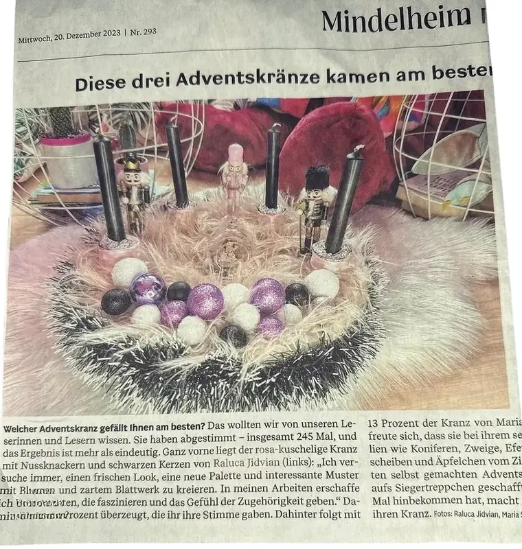

Platz eins.
Ein selbst gestalteter Adventskranz, der Menschen berührte und sich gegen die Konkurrenz durchsetzte.
In diesem Moment ging es um mehr als einen Wettbewerb. Es ging um die Erfahrung, dass eine eigene Idee ihren Platz finden kann – auch dann, wenn andere sie zunächst nicht erkennen.

Wenn Anerkennung plötzlich persönlich wird
Manchmal sind es nicht die großen Auszeichnungen, die uns bewegen.
Manchmal ist es der Moment, in dem wir begreifen, dass wir etwas können, an das wir selbst vielleicht nicht immer geglaubt haben.
Der Sieg war deshalb mehr als eine schöne Überraschung. Er war eine Erinnerung daran, dass Kreativität nicht ausschließlich durch Zeugnisse, Ausbildungen oder berufliche Stationen definiert wird. Sie zeigt sich in Ideen. In Entscheidungen. In Geduld. In dem Mut, etwas auszuprobieren, das nicht jeder verstehen muss. Und manchmal zeigt sie sich in einem Adventskranz, der mit seinen Farben und Figuren eine Geschichte erzählt.
Eine Absage bestimmt nicht, was aus einer Idee werden kann.
Ein fehlendes Zertifikat nimmt einer kreativen Vision nicht ihren Wert.
Und ein ungewöhnlicher Weg ist nicht automatisch der falsche.
Die Idee hinter Dandelion 11:11
Dandelion 11:11 steht für individuelle Gestaltung, besondere Details und Kreationen mit Charakter. Für Geschenke, die mehr ausdrücken als ihren materiellen Wert. Für Dekorationen, die nicht einfach nur einen Raum verschönern, sondern Erinnerungen schaffen. Und für Designs, die nicht austauschbar sein müssen, um schön zu sein.
Ob handgestalteter Adventskranz, persönliches Geschenk oder außergewöhnliches Arrangement – jede Kreation beginnt mit einer Idee. Mit dem Wunsch, etwas zu schaffen, das zu einem Menschen, einem Anlass oder einer ganz bestimmten Geschichte passt.
Dabei folgen wir nicht einfach jeder Regel.
Wir suchen nach dem, was ein Stück besonders macht.
Nach Farben, die überraschen. Nach Details, die eine Bedeutung haben. Nach Kombinationen, die man nicht überall findet.
Denn für uns ist Gestaltung mehr als Dekoration. Sie ist eine Möglichkeit, Gefühle sichtbar zu machen.
Was einen besonderen Adventskranz ausmacht
Ein Adventskranz muss nicht klassisch sein, um festlich zu wirken. Er darf modern, farbenfroh, verspielt, elegant oder überraschend sein. Entscheidend ist das Zusammenspiel:
- Farben mit Charakter, die eine eigene Stimmung erzeugen.
- Besondere Figuren und Details, die dem Design Persönlichkeit verleihen.
- Sorgfältige Gestaltung, bei der jedes Element seinen Platz findet.
- Eine individuelle Idee, die den Kranz von gewöhnlicher Dekoration unterscheidet.
- Ein Gefühl, das bleibt, wenn man ihn betrachtet.
Genau diese Verbindung macht aus einem Arrangement etwas Persönliches.
Weihnachten darf Persönlichkeit zeigen
Die Weihnachtszeit ist voller Traditionen. Und gerade deshalb lieben wir die Möglichkeit, ihnen eine eigene Note zu geben. Vielleicht ist es ein Adventskranz in ungewöhnlichen Farben. Vielleicht sind es besondere Figuren, die eine Kindheitserinnerung wecken. Vielleicht ist es ein Geschenk, das genau den Geschmack eines Menschen trifft.
Es muss nicht jedem gefallen.
Es muss sich richtig anfühlen.
Bei Dandelion 11:11 entstehen Ideen für Menschen, die das Besondere suchen und Freude an individuellen Details haben. Jede Kreation erzählt dabei ihre eigene kleine Geschichte. Und manchmal erinnert sie uns daran, dass aus einer einzigen Idee etwas entstehen kann, das wir uns vorher kaum zugetraut hätten.
Entdecke die Weihnachtswelt von Dandelion 11:11
Du suchst einen Adventskranz, der zu deinem Stil passt? Oder möchtest du einen besonderen Menschen mit einer individuellen Kreation überraschen? Gemeinsam können wir Farben, Figuren und Gestaltungsideen besprechen und daraus ein persönliches Arrangement entwickeln. Ob ausdrucksstark und modern oder warm und elegant – die Möglichkeiten richten sich nach deiner Vorstellung und den verfügbaren Materialien.
Du hast eine eigene Idee? Dann freuen wir uns, sie kennenzulernen.
Eine letzte Erinnerung
Manchmal sagen Menschen Nein, bevor sie sehen können, was in uns steckt.
Manchmal braucht es Zeit, bis eine Idee ihren Platz findet.
Und manchmal genügt ein einziger Moment, um zu verstehen, dass wir unseren eigenen Weg gehen dürfen.
Für Dandelion 11:11 ist diese Geschichte eine Erinnerung daran, warum wir gestalten: nicht, um es allen recht zu machen, sondern um Dinge zu schaffen, die Persönlichkeit haben und Menschen berühren.
Denn Kreativität braucht nicht immer eine Erlaubnis.
Manchmal braucht sie nur den Mut, anzufangen.
Some stories aren't written.
They bloom.